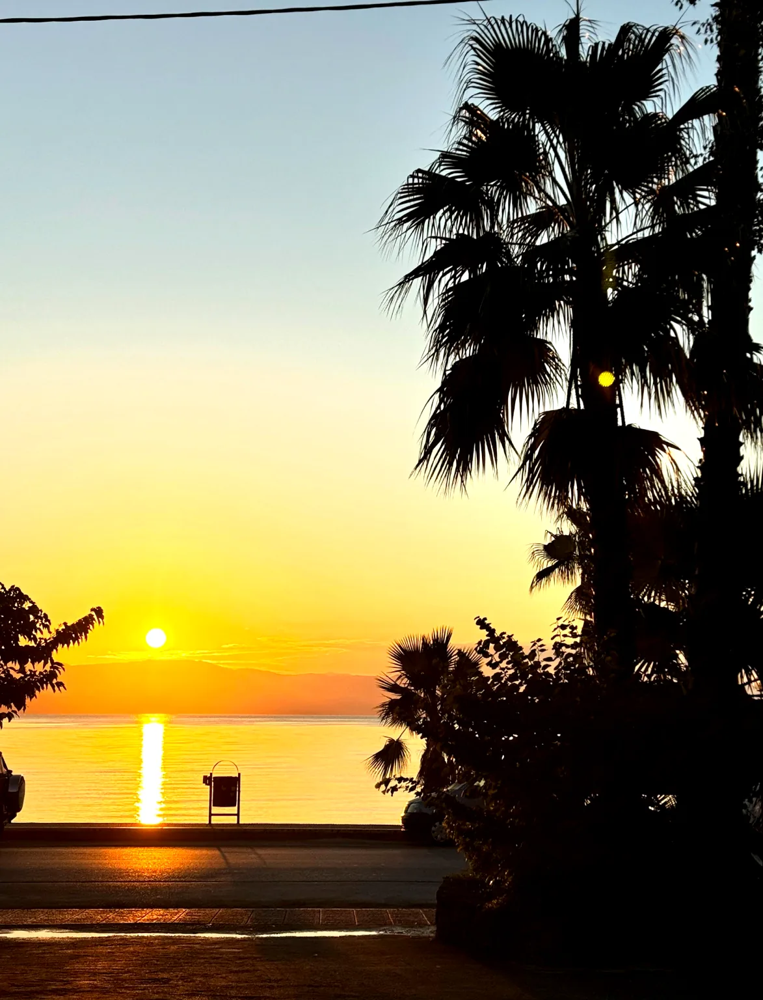
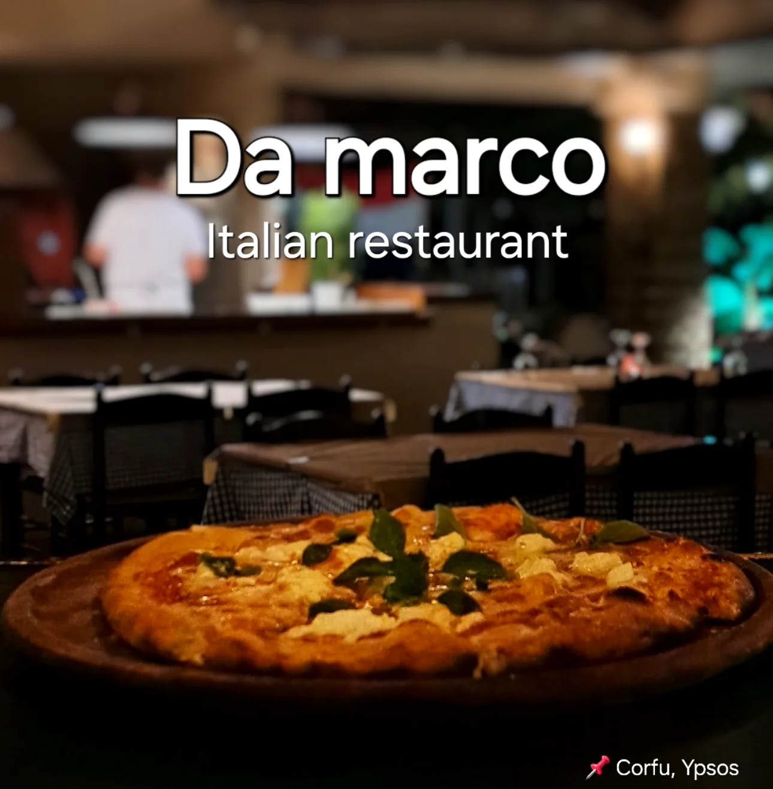

Da Marco rating
4.4 / 5
Public travel-platform rating summary. Latest details may vary by platform.
Ipsos · Corfu · Greece
A calm base for camper vans, caravans and tents near Da Marco. Call before arrival to confirm availability.
Simple stay options for travellers in Ipsos.
Confirm availability, prices and current services.
Food and local facilities close to the camping area.
Corfu · Ipsos
Ipsos sits between calm Ionian water, green hills and the coastal road of Corfu. It is known for its long beach, easy access and relaxed seaside atmosphere.

Da Marco rating
Public travel-platform rating summary. Latest details may vary by platform.
Google Maps
Open Maps for directions and latest public details.
Tripadvisor
Check public traveller information before arrival.
Stay options
Choose the type of stay that fits your trip. Call before arrival to confirm availability.
A practical stop for camper vans close to Ipsos Beach and Da Marco.
Call for availabilityCall
For travellers arriving with a caravan. Call first to confirm current space and services.
Loop video previewCall
A simple tent stay option for travellers looking for a calm base in Ipsos.
Ask before arrivalCall

Before you arrive
A short checklist before driving to the camping area.
01
Call to confirm availability.
02
Ask about current prices and services.
03
Use Google Maps for directions.
04
Arrive with current details confirmed.
Nearby
A simple base close to the beach, food and the local Ipsos area.
Sea
Close to the long beach and coastal road.
Food
Restaurant access close to the camping area.
Area
Useful local facilities around Ipsos.
Why choose it
Useful information for a simple camping stop in Ipsos.
Near Ipsos Beach
Close to the sea and local facilities in Ipsos.
Da Marco nearby
Food and restaurant access close to the camping area.
Direct contact
Call or message on WhatsApp before arrival.
Call before arrival or send a WhatsApp message. For route planning, open Google Maps.